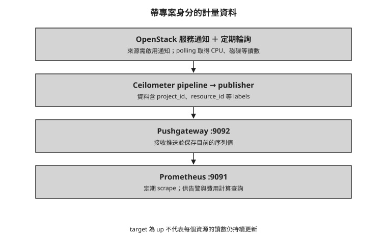
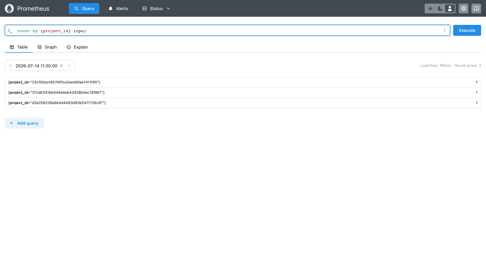
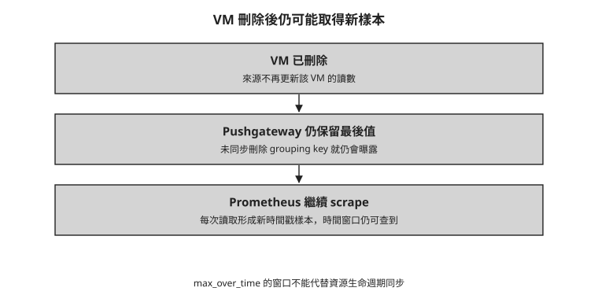

Day 28: 計量管線——把用量對回租戶，並確認資料仍有效¶

Prometheus 已經能查主機 CPU 與記憶體，現在同事要問的是「team-a 用了多少」。你需要把 VM 的讀數對回 OpenStack 專案，而不是把整台主機的用量當作某個租戶的用量。這一章加入 Ceilometer，將帶有 project_id 的計量資料送到現有 Prometheus。讀完之後，查不到資料時，你能逐段確認來源、轉送與查詢；查得到資料時，也能判斷它是否仍代表存在的資源。
開始之前¶
沿用 Day 21 的 Prometheus、Day 27 的 team-a 與 team-a-net。指令在 Kolla 部署主機執行；10.0.0.4、inventory、服務埠與 project UUID 都需對照自己的環境。下面保留歷史輸出，UUID 不可直接套用。
Ceilometer 蒐集 OpenStack 的資源用量與事件，資料包含專案歸屬。Day 21 的主機 exporter 指標主要用來觀察主機健康；是否帶租戶資訊要看 exporter 與設定，不能只看指標存在哪套資料庫。
本課選擇 Prometheus 作為後端。舊教材也可能使用 Gnocchi；那是另一種資料模型與整合方式，不能把其資源 metadata 查詢直接套用到本章。本章 publisher 實際送出的 labels 才是後續告警可用的條件，不能從「Prometheus 支援 label」推定它已收到所有 VM metadata。
資料怎麼到 Prometheus¶
Ceilometer 有兩種來源：polling 定期讀取 CPU、磁碟等讀數；notification 接收 Nova、Cinder 等服務發出的事件。Pipeline 決定資料交給哪個 publisher，也就是發送到後端的元件。
下圖從來源往下看。來源服務要開通知，Ceilometer 才收得到；Prometheus 則主動抓取 Pushgateway 的 /metrics。

Pushgateway 保存推送的最新值，供 Prometheus 的 scrape（定期抓取）讀取。這個保存動作與 VM 的生命週期分開，刪掉 VM 不會自動刪掉指標。後面會看到這為何影響計費；先把資料路徑接起來。
步驟 1：準備 Pushgateway 的接收端¶
Kolla 的 enable_ceilometer_prometheus_pushgateway 設定 Ceilometer 的目的地，這份部署仍需自行啟動接收服務。先檢查主機上的監聽埠；本課 Prometheus 已使用 9091，因此 Pushgateway 改用 9092。
sudo docker run -d --name pushgateway --restart unless-stopped --network host \
quay.io/prometheus/pushgateway:latest --web.listen-address=:9092
這份歷史命令使用 latest，沒有留下固定 digest，不能用它保證重現同一版本。重建環境時應先選定並記錄測試版本。它也沒有啟用認證，且監聽所有主機介面；只應放在已限制來源的實驗網路，讀寫邊界見疑難排解：無認證的計量入口。
本課 Docker 的 bridge／iptables 設定不能使用一般 -p 對映，因此使用主機網路；這是此部署的限制，不是所有 Kolla 環境都只能這樣做。確認服務健康與埠分布：
curl -s -o /dev/null -w "%{http_code}\n" http://10.0.0.4:9092/-/healthy
sudo ss -tlnp | grep -E ":909[12]"
200
10.0.0.4:9091 users:(("prometheus",pid=10788,fd=6))
*:9092 users:(("pushgateway",pid=1319183,fd=4))
200 表示健康端點回應；*:9092 表示所有主機介面都在監聽，不能解讀為只有本機可連。
步驟 2：讓 Prometheus 抓取並保留標籤¶
把 scrape 設定放進 Kolla 支援的片段目錄：
sudo mkdir -p /etc/kolla/config/prometheus/prometheus.yml.d
sudo tee /etc/kolla/config/prometheus/prometheus.yml.d/10-pushgateway.yml << 'EOF'
scrape_configs:
- job_name: ceilometer-pushgateway
honor_labels: true
static_configs:
- targets:
- '10.0.0.4:9092'
EOF
honor_labels: true 讓來源的 job／instance 在衝突時優先保留；否則 Prometheus 會使用目標標籤，來源衝突值可能改名為 exported_job／exported_instance。後續 CloudKitty 查 job="openstack-telemetry"，需要這些標籤保持一致。
步驟 3：部署收集器¶
開啟 Ceilometer 與 publisher，填入自己的 Pushgateway 位址：
sudo tee -a /etc/kolla/globals.yml << 'EOF'
# Day 28:計量管線(Ceilometer → Prometheus,不用 Gnocchi)
enable_ceilometer: "yes"
enable_ceilometer_prometheus_pushgateway: "yes"
ceilometer_prometheus_pushgateway_host: "10.0.0.4"
ceilometer_prometheus_pushgateway_port: "9092"
EOF
source ~/kolla-venv/bin/activate
kolla-ansible deploy -i ~/all-in-one --tags ceilometer,prometheus
部署後確認 central、compute、notification 三個容器，以及 Prometheus 中的 scrape target。原紀錄顯示目標健康：
up 只能證明 Prometheus 抓得到 Pushgateway，不能證明每個 VM 的資料都有更新；Pushgateway 仍可能回傳已停止更新的值。
步驟 4：確認通知來源也更新了設定¶
只部署 Ceilometer，不會重新產生 Nova、Cinder、Neutron 的設定。先查來源服務的 oslo_messaging_notifications driver。Nova、Cinder 使用各自的 API 容器；Neutron 的容器名是 neutron_server，不能沿用 ${s}_api：
for s in nova cinder neutron; do
echo -n "$s: "
container="${s}_api"
if [ "$s" = neutron ]; then container=neutron_server; fi
sudo docker exec "$container" grep -A2 "^\[oslo_messaging_notifications\]" /etc/$s/$s.conf | grep driver
done
原紀錄的來源狀態是：
noop 表示不發送通知。更新這些來源服務，而不只是接收端：
更新後再查對應容器中的 driver 與 topics：
nova-api driver=messagingv2 topics=notifications
cinder-api driver=messagingv2 topics=notifications
neutron-server driver=messagingv2 topics=notifications
glance-api driver=messagingv2 topics=notifications
messagingv2 會把通知送到訊息系統。這與 Day 34 的 API 稽核日誌是不同設定與用途，不要為了輸出稽核 log 把計量通知來源關掉。
步驟 5：用 team-a 的 VM 確認標籤¶
先依 Day 27 清除 application credential 變數與 OS_SYSTEM_SCOPE，再載入 team-a 的 openrc。Day 27 的兩台額度測試 VM 應已刪除；本章需要至少一台的剩餘額度。
source ~/team-a-openrc.sh
openstack server create meter-vm --flavor m1.tiny --image cirros \
--network team-a-net --wait
等待輪詢產生樣本，再看 Pushgateway 原始資料：
compute_instance_booting_time{...} 13.29833
cpu{instance="",job="openstack-telemetry",project_id="…",resource_id="…",user_id="…"} 6.777e+10
disk_device_read_bytes{...} 2.877696e+07
disk_device_read_requests{...} 1035
disk_device_write_bytes{...} 7.303168e+07
這裡的 cpu 是累積 CPU 時間讀數，不是百分比。project_id 是租戶歸屬，resource_id 是 VM；之後要查指定租戶時，用自己的 team-a project ID。指標名稱沒有 ceilometer_ 前綴。
先按專案計算目前看見的 cpu 時間序列數：
PW=$(sudo grep '^prometheus_password:' /etc/kolla/passwords.yml | awk '{print $2}')
curl -s -u admin:$PW --get http://10.0.0.4:9091/api/v1/query \
--data-urlencode "query=count by (project_id) (cpu)"
project_id=33cf0bba…(admin) → 1 台
project_id=37cdb341…(Trove) → 1 台
project_id=d2b25822…(team-a) → 1 台 ← Day 27 建的租戶

這個結果代表各專案有幾條符合條件的 cpu 序列。只有每台 VM 對應一條序列、資料沒有重複且已刪資源已清理時，才可把它當 VM 台數。下面再縮到單一 project；命令內的 UUID 請替換成自己的 team-a ID：
curl -s -u admin:$PW --get http://10.0.0.4:9091/api/v1/query \
--data-urlencode 'query=cpu{project_id="d2b258226e6b4d4493d93b5411726c97"}'
這筆資料確認了 VM 讀數與專案標籤的連結。它還沒有證明資料完整、沒有重複或可直接用於收費。
在哪裡觀察 Ceilometer¶
本課沒有部署 Ceilometer 的網頁面板。Kolla 的 Horizon 設定中，Ceilometer 這一列只有政策檔，其他服務才有面板開關：
- { name: "ceilometer", enabled: "{{ enable_ceilometer_horizon_policy_file }}" } # 只有政策檔
- { name: "cloudkitty", enabled: "{{ enable_horizon_cloudkitty }}" } # 有面板
- { name: "designate", enabled: "{{ enable_horizon_designate }}" } # 有面板
因此，操作時看來源服務、Ceilometer 日誌、Pushgateway 原始資料，再到 Prometheus 查詢。Day 30 才會透過 CloudKitty 查看費用計算結果。
疑難排解¶
容器 Up，9092 健康檢查卻連不上¶
下列是此環境失敗的埠對映方式，不要跟步驟 1 同時執行：
原因：本課 Docker 的 iptables: false 與 bridge: none 使這條對映路徑不可用。修法：先移除同名失敗容器，再採主機網路版本；不要直接重跑而留下名稱衝突：
sudo docker run -d --name pushgateway --restart unless-stopped --network host \
quay.io/prometheus/pushgateway:latest --web.listen-address=:9092
主機網路仍需檢查監聽位址、埠衝突與防火牆。
Pushgateway 與 Prometheus 使用同一個埠¶
症狀：服務無法綁定 9091。原因：Pushgateway 預設埠與本課 Kolla Prometheus 相同。修法：依步驟 1 使用 9092，並同步修改 Ceilometer publisher 與 Prometheus scrape target。
收集器正常，卻沒有服務事件¶
原因：來源服務仍使用 noop，僅部署 Ceilometer 沒有更新它們。修法：檢查來源設定後，執行步驟 4 的部署範圍：
之後再確認 messagingv2；不要只以部署成功判定通知已送達。
搜尋 ceilometer_ 沒有指標¶
publisher 設定可能已正確：
錯誤的名稱假設卻會查到零筆：
修法：先查看原始資料，再以實際名稱與 labels 查詢：
已刪 VM 的讀數為什麼還在¶
原紀錄用一筆指標的 resource ID 查 VM，目前認證身分查不到這個資源：
No Server found 也可能是專案範圍或權限造成，不能單靠這一行判定 VM 已刪除。先以有權查看該專案的管理員核對正確 UUID 與歸屬，再比對實際刪除前後的記錄。以下說明的是已確認刪除時的資料生命週期。
Pushgateway 會持續曝露已保存的序列，直到對應資料被明確刪除或替換。Prometheus 每次 scrape 都會把仍曝露的值記成新的樣本，因此「VM 不再推送」和「Prometheus 不再取得樣本」是兩件事。
圖中最後一條箭頭會持續發生，這正是只加時間窗口不能解決的原因：

max_over_time(...[1h]) 仍會看見窗口內新抓到的舊值；它不會自動排除已刪 VM。count(cpu) 也可能把它算進台數。不能據此聲稱 Day 30 帳單已避免這項誤差。
要把這份資料用於費用計算，必須另外管理資源刪除與 Pushgateway grouping key 的同步，並核對資料的新鮮度與租戶清單。清理前先確認 grouping key 對應範圍，避免刪到仍存在的 VM；本課沒有完成自動同步與刪除後停止計費的端到端驗證。Pushgateway 官方說明明確區分推送時間與抓取樣本的時間。
無認證的計量入口可被其他來源讀寫¶
步驟 1 的服務沒有認證且監聽 *:9092。只要網路可達，來源就可能讀取租戶標籤或寫入指標；單機部署也不自動等於只有本機可達。這些數值會影響告警與費用，必須確認寫入者可信。
要限制的來源包括需要寫入的 Ceilometer 與需要讀取的 Prometheus；可用網路限制及具認證的代理建立邊界。本課未部署這套完整保護，也沒有驗證跨租戶的讀寫隔離，不能把實驗設定直接視為計費平台的完成配置。
想一想¶
- Pushgateway target 是 up，但沒有 VM 的新讀數。你會依資料路徑先查哪幾處？
- 某台 VM 已刪除一週，
max_over_time(cpu[1h])卻仍有值。為什麼縮短窗口不一定有效？ - Prometheus 已有密碼，但 Pushgateway 沒有。這是否足以保護計量資料？還要允許哪些來源連線？
小結¶
Ceilometer 將用量和專案歸屬一起送出，Prometheus 才能按租戶查詢。驗證資料路徑時，來源通知、publisher、scrape 與 labels 都要確認。資料到達之後仍要檢查生命週期：Pushgateway 保留的舊值會被持續抓成新樣本，時間窗口不能代替資源刪除同步，也不能單憑有數字就認定可以正確收費。
延伸閱讀¶
想再深入，可以從這幾份開始：
- Ceilometer 2025.1：polling、通知與 publisher。
- Kolla 監控與日誌指南：部署設定的入口。
- Pushgateway 適用情境：保存序列與資源生命週期不同的限制。
- Pushgateway 時間戳：推送、曝露與 scrape 的區別。
下一步¶
Day 29 讓 Aodh 查這些序列，並在條件成立時通知 Heat 調整 VM 數量。告警條件也必須使用正確租戶與有效資料，否則會對錯誤的讀數採取動作。